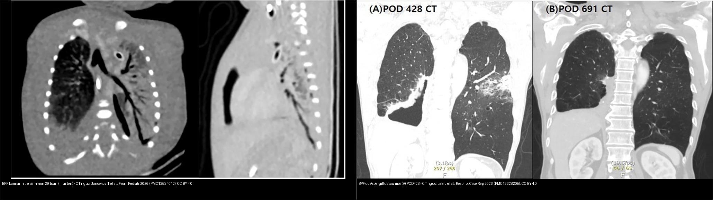
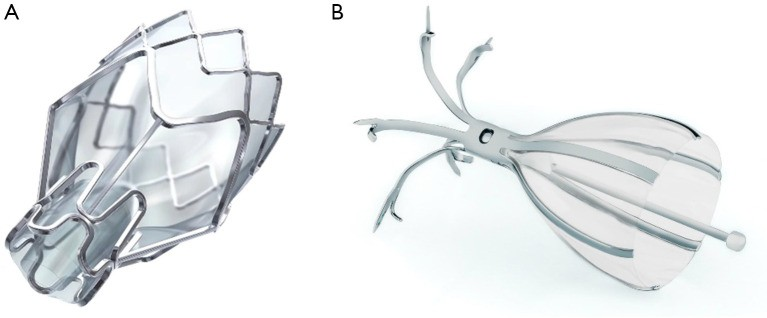
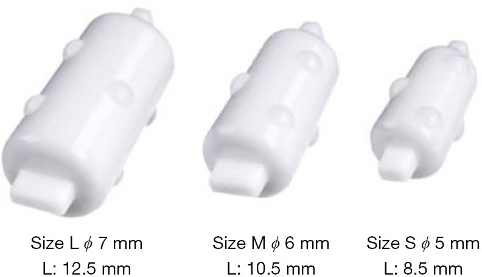
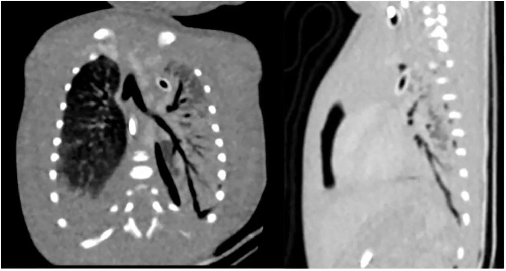
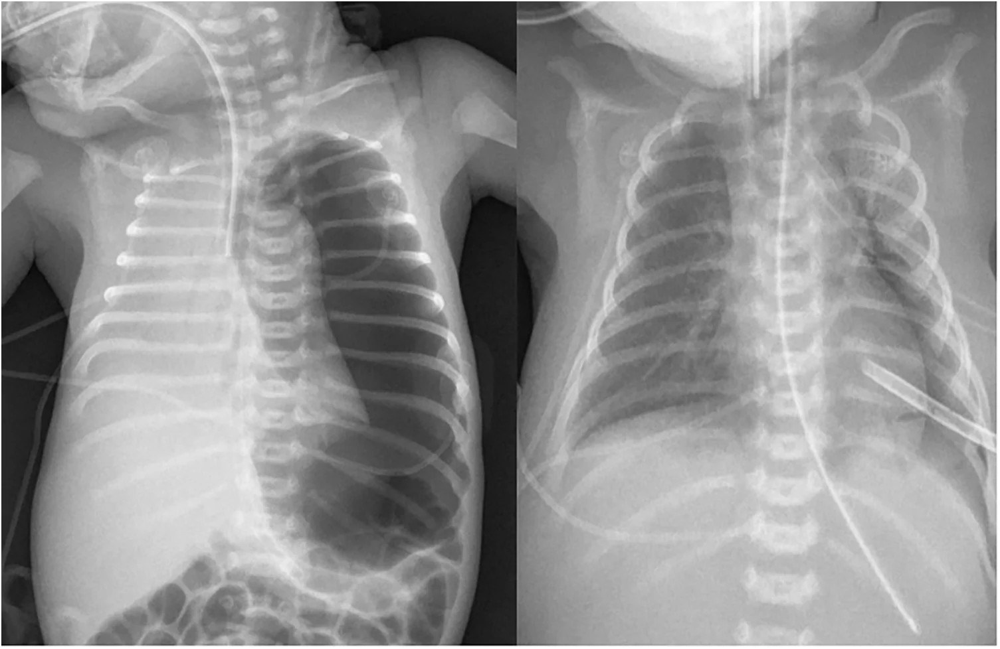
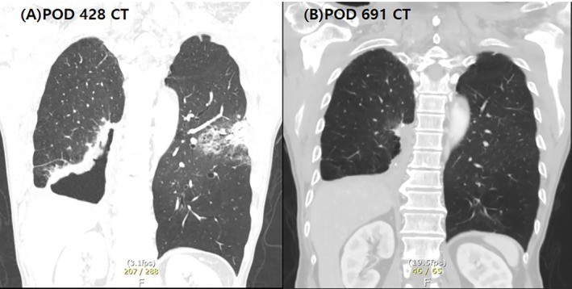
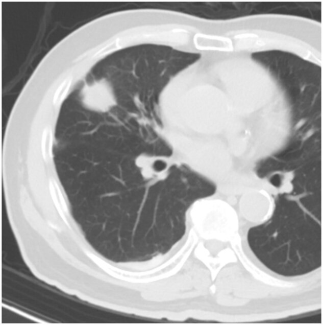
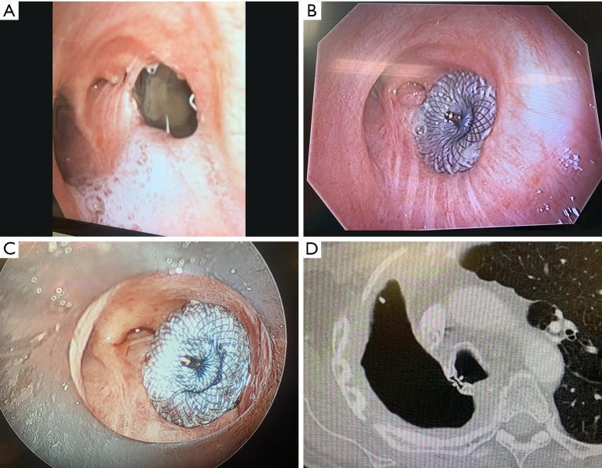
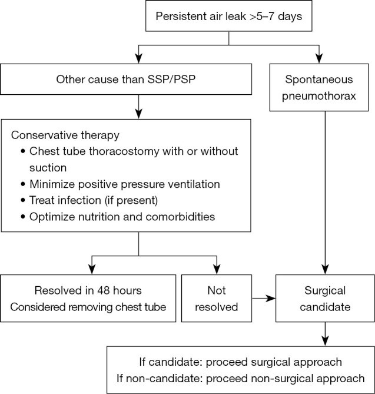

618 — Rò phế quản–màng phổi & rò khí dai dẳng ở trẻ: van một chiều nội phế quản, pleurodesis, khi nào mổ / Bronchopleural fistula & persistent air leak in children
Tags: pattern:ro-khi pattern:ro-phe-quan-mang-phoi pattern:ro-khi-dai-dang vung:phoi vung:mang-phoi protocol:CT-nguc protocol:EBV
Mức chắc chắn (certainty): tổng hợp y văn (literature synthesis) — nhóm tự biên từ y văn mở (CC BY 4.0 và CC BY-NC-ND 4.0); các ca minh họa là ca nguyên văn của bài gốc (giữ đúng tuổi/thời điểm trong chú thích).
Đây là bước tiếp theo của 617 – Hội chứng rò khí ở nhũ nhi và 616 – Biến chứng viêm phổi nhi (empyema, hoại tử): khi rò khí KHÔNG tự đóng sau vài ngày, câu hỏi đổi từ "có tràn khí không" sang "rò ở đâu, do đâu, và chọn can thiệp nào (van một chiều, pleurodesis, hay mổ)".
1. Tổng quan bệnh học – cơ chế hình ảnh
- Rò khí (air leak) là khí đi từ phổi vào khoang màng phổi. Khi rò kéo dài, gọi là rò khí dai dẳng (persistent air leak – PAL). Ngưỡng hay dùng: rò > 5–7 ngày; theo BTS 2023 định lượng bằng dẫn lưu kỹ thuật số: thể tích rò > 15–20 mL/phút kéo dài > 5 ngày [J Thorac Dis 2024, PMC11228722].
- Phân loại theo vị trí giải phẫu (rất quan trọng vì quyết định can thiệp):
- Rò phế nang–màng phổi (alveolar-pleural fistula – APF) và rò tiểu phế quản ngoại vi–màng phổi (peripheral bronchiolar-pleural) — nguồn ngoại vi, thường đáp ứng van một chiều nội phế quản (endobronchial valve – EBV).
- Rò phế quản–màng phổi (bronchopleural fistula – BPF) — nguồn phế quản lớn/gốc phế quản (bronchial stump), thường sau cắt phổi, dễ nhiễm trùng màng phổi (pleural sepsis), phù hợp mổ/van chuyên biệt [J Thorac Dis 2026, PMC13460219].
- Phụ thuộc dẫn lưu: DDPAL (drainage-dependent) — hết rò khi kẹp ống; DIPAL (drainage-independent) — rò ngay cả khi kẹp.
- TẠI SAO ở trẻ nhỏ (cơ chế + hình ảnh):
- Thông khí áp lực dương (mechanical ventilation) là cơ chế hàng đầu ở trẻ sơ sinh: phế nang/tiểu phế quản vỡ do barotrauma/volutrauma → khí lan theo vỏ mạch (Macklin) ra trung thất rồi màng phổi. Rò khí bẩm sinh (không do thông khí, không do nhiễm trùng) cực hiếm [Front Pediatr 2026, PMC13534012].
- Sau cắt phổi (lobectomy), gốc phế quản xì (dehiscence) → BPF; khí đi thẳng vào màng phổi → tràn khí + ổ khí–dịch trong khoang màng phổi. Trên CT, dấu chốt là thấy đường thông trực tiếp giữa phế quản và khoang màng phổi (rãnh khí xuyên thành) [J Thorac Dis 2026, PMC11228722].
- Nhiễm nấm (Aspergillus) ở gốc phế quản → hoại tử + cản trở liền sẹo → BPF xuất hiện muộn; trên CT là hang có mức khí–dịch sát gốc phế quản, tồn tại dù đã dẫn lưu [Respirol Case Rep 2026, PMC13328205].
- Cạm bẫy hình ảnh: rò khí nhỏ có thể không thấy trên X-quang/CT tĩnh; phải dùng bơm khí/occlusion test (Chartis) hoặc xạ hình khí (99mTc-DTPA) để định vị.
- Ngưỡng định lượng nổi lòng:
- Sau cắt thùy phổi: BPF gặp 43/7.550 = 0,57%; tử vong 90 ngày 29,2% ở nhóm bảo tồn so với thấp hơn rõ ở nhóm can thiệp tích cực [BMC Pulm Med 2026, PMC13238005].
- PAL theo phẫu thuật (người lớn, tham chiếu): LVRS 46%, lobectomy 8,3%, wedge 3,3%; sinh thiết phế quản xuyên thành ngực gây tràn khí chỉ 0,009% [J Thorac Dis 2024, PMC11228722].
- EBV ở bệnh nặng: rút ống dẫn lưu tích lũy 60,5% / 71,1% / 94,7% tại ngày 10 / 14 / 20; tử vong nội viện 10,5% (4/38) [Front Med 2026, PMC13457204].
- Phân độ Cerfolio (mức rò): độ 3 (rò thì hít vào) 37%, độ 4 (rò liên tục cả hít vào–thở ra) 63% trong loạt bệnh nặng trên.
- Trẻ sơ sinh rò cực mạnh: ca 29 tuần/1.360 g có rò ~800 mL/phút = toàn bộ thông khí phút → đe dọa sống còn, buộc can thiệp [Front Pediatr 2026, PMC13534012].
- Nấm Aspergillus kèm BPF có thể đáp ứng kháng nấm kéo dài ± dẫn lưu mà không cần mổ thêm [Respirol Case Rep 2026, PMC13328205].

Trái: BPF bẩm sinh ở trẻ sinh non 29 tuần — CT ngực, mũi tên chỉ đường rò (Janowicz T et al., Front Pediatr 2026, PMC13534012). Phải: BPF do Aspergillus sau mổ, ngày hậu phẫu 428 — hang + đường rò ở đáy phổi phải (Lee J et al., Respirol Case Rep 2026, PMC13328205). Cả hai CC BY 4.0 — ảnh ghép letterbox.2. Mẫu hình + chẩn đoán phân biệt theo cơ chế (Gamut)
- Theo NGUỒN rò (định vị): trung tâm/gốc phế quản = BPF (sau cắt phổi, sau đặt stent phế quản, hoại tử do nấm/lao) so với ngoại vi = APF/tiểu phế quản (bóng khí vỡ, sau sinh thiết/đốt u, sau chấn thương).
- Theo BỐI CẢNH trẻ em:
- Sơ sinh: thông khí áp lực dương (RDS/bệnh màng trong) → barotrauma; nhiễm trùng (viêm phổi, kể cả nấm); do thủ thuật (đặt ống nội khí quản, hút dịch, đặt catheter); bẩm sinh (rất hiếm).
- Trẻ lớn: sau cắt thùy phổi/cắt phổi (nhất là sau hóa trị), hoại tử phổi (tụ cầu/liên cầu), dị vật bỏ sót, sau sinh thiết/đốt u, tràn khí tự phát bóng khí.
- Theo HẬU QUẢ: DDPAL (nhẹ, thường tự đóng khi đúng dẫn lưu) so với DIPAL/BPF (nặng, nguy cơ viêm màng phổi mủ, suy hô hấp, thất bại thông khí).
- 4 câu hỏi khi đọc hình: (1) rò trung tâm hay ngoại vi? (2) rò phụ thuộc dẫn lưu không (kẹp ống)? (3) có nhiễm trùng/hoại tử (nấm, mủ, mảnh hoại tử) không? (4) trẻ có đủ điều kiện mổ không?
3. Bảng so sánh phân biệt (ma trận đối chiếu)
| Thực thể (entity) | Hình ảnh điển hình | Chốt vào (rule-in) | Chốt loại (rule-out) | Gợi ý xác nhận |
|---|---|---|---|---|
| BPF sau cắt phổi | Hang/ổ khí–dịch sát gốc phế quản, khí trong khoang màng phổi dai dẳng, ± mảnh hoại tử | Đường thông phế quản–màng phổi trên CT + rò ngay khi kẹp ống (DIPAL) | Rò chỉ khi hít mạnh/có bóng khí vỡ ngoại vi → nghĩ APF, không phải gốc phế quản | CT ngực lát mỏng; nội soi phế quản (thấy lỗ xì, thử occlusion) |
| APF / rò tiểu phế quản ngoại vi | Tràn khí/ít dịch, bóng khí ngoại vi vỡ; không hang gốc phế quản | Rò ngoại vi + đáp ứng khi bịt thử (occlusion test) làm giảm rò > 50% | Hang + đường thông gốc phế quản → BPF | Chartis/occlusion test; 99mTc-DTPA; kẹp ống |
| BPF do nấm (Aspergillus) | Hang có mức khí–dịch không liền sẹo, xuất hiện muộn sau mổ | Hang tồn tại dai dẳng + nấm trong dịch/bệnh phẩm + thất bại liền sẹo | Hang co nhỏ dần theo thời gian → lành thường, không cần mổ | Cấy/nhuộm nấm; CT chuỗi; kháng nấm ± dẫn lưu |
| BPF bẩm sinh (sơ sinh) | Trẻ sơ sinh rò khí cực mạnh dù đã ≥ 2 ống dẫn lưu, không phế quản nguồn rõ | Rò liên tục lượng lớn ≈ toàn bộ thông khí phút + không tìm thấy nguyên nhân thông khí/nhiễm trùng | Rò giảm sau khi tối ưu thông khí → barotrauma, không phải bẩm sinh | CT ngực; nội soi phế quản; thông khí bảo vệ phổi |
| Rò khí áp lực (tension) trên nền BPF | Trung thất lệch, tim đè, khí lan mô mềm; rò tiếp diễn | Suy hô hấp/huyết động cấp + lệch trung thất → chọc giải áp ngay rồi can thiệp gốc rò | Rò nhẹ, không lệch trung thất → theo dõi dẫn lưu | X-quang nằm; siêu âm; lâm sàng |
| Viêm màng phổi mủ do BPF | Dịch khu trú đục/mức khí–dịch (đôi khi liên tục với đường thông), split pleura | Dịch mủ + khí vào khoang màng phổi + rò khí | Dịch trong không khí, không rò → không mủ do rò | Chọc hút/cấy; CT; dẫn lưu tối ưu |
Ảnh minh họa cơ chế & can thiệp

Hai hệ van một chiều nội phế quản: (A) Zephyr (một chiều, dùng cho rò khí và giảm thể tích phổi) và (B) Spiration/IBV (hình ô – “umbrella”). Van chặn luồng khí vào vùng rò nhưng cho phép khí/thận dịch thoát ra. Ruenwilai P et al., J Thorac Dis 2024 (PMC11228722), CC BY-NC-ND 4.0 (nguyên bản).
Nút bịt phế quản Watanabe (endobronchial Watanabe spigot – EWS) ba cỡ L, M, S — giải pháp thay thế van ở đường thở nhỏ/khó đặt van; gỡ nút khi rò hết, thường 3–4 tuần. Ruenwilai P et al., J Thorac Dis 2024 (PMC11228722), CC BY-NC-ND 4.0 (nguyên bản).4. Protocol + phân độ + xử trí + flowchart
- Đọc cơ bản trước can thiệp: X-quang ngực (mức khí–dịch, lệch trung thất) + CT ngực lát mỏng (định vị rò trung tâm/ngoại vi, hang, hoại tử, mủ). Nội soi phế quản để thấy lỗ xì và thử occlusion test.
- Chẩn đoán nguồn rò: kẹp ống dẫn lưu phân biệt DDPAL vs DIPAL; occlusion test/Chartis — giảm rò > 50% gợi ý phân thùy đích phù hợp van, khe liên thùy toàn vẹn > 90% = ít thông khí bàng hệ, khả năng van thành công cao [J Thorac Dis 2024, PMC11228722].
- Phân độ rò Cerfolio (mức rò khí): độ 1 chỉ khi thở ra gắng sức; độ 2 khi thở ra thì tự nhiên; độ 3 khi hít vào; độ 4 rò liên tục cả hít vào–thở ra. Độ cao gợi ý theo dõi sát và cân nhắc can thiệp sớm [Front Med 2026, PMC13457204].
- Lựa chọn can thiệp (từ ít xâm lấn đến mổ):
- Tối ưu dẫn lưu + tối ưu thông khí (lung-protective) và kháng sinh/nhiễm nấm — bước nền.
- Pleurodesis hóa học: máu tự thân (blood patch), huyết tương tươi đông lạnh (FFP) như chất keo sinh học — hiệu quả ở người lớn cao tuổi/kém thuận lợi mổ [Respir Med Case Rep 2026, PMC13498975].
- Van một chiều nội phế quản (EBV): đầu tay khi rò ngoại vi/APF và khe toàn vẹn; rút ống được phần lớn trong 2 tuần; van thường gỡ khi hết rò (6–8 tuần) [PMC11228722, PMC13457204].
- Nút bịt Watanabe (EWS) cho đường thở nhỏ; occluder/van chuyên biệt cho BPF gốc phế quản [PMC13460219].
- Mổ khi rò gốc phế quản lớn, thất bại nội soi, viêm màng phổi mủ, hoặc toàn trạng cho phép — can thiệp tích cực liên quan giảm tử vong 90 ngày [BMC Pulm Med 2026, PMC13238005].
flowchart TD
A[Rò khí > 5-7 ngày hoặc rò lượng lớn] --> B[X-quang + CT ngực lát mỏng + nội soi phế quản]
B --> C{"Rò TRUNG TÂM (gốc phế quản) hay NGOẠI VI?"}
C -->|Ngoại vi - APF| D{Khe liên thùy toàn vẹn > 90% + occlusion test giảm > 50%?}
D -->|Có| E[Van một chiều EBV / nút Watanabe]
D -->|Không| F[Pleurodesis: máu tự thân / FFP; tối ưu dẫn lưu + thông khí]
C -->|Trung tâm - BPF| G{"Có nhiễm trùng/hoại tử (nấm, mủ)?"}
G -->|Có| H[Kháng nấm/kháng sinh + dẫn lưu tối ưu; can thiệp gốc rò nếu cần]
G -->|Không| I[Van/occluder chuyên biệt hoặc mổ khâu lại gốc phế quản]
A --> J{Suy hô hấp/huyết động + lệch trung thất?}
J -->|Có| K[Chọc giải áp cấp cứu TRƯỚC, rồi xử lý gốc rò]
J -->|Không| B
5. Biến thể bình thường và cạm bẫy
- "Tràn khí đã hết" trên X-quang không đồng nghĩa "rò đã hết": phải kẹp ống thử và đo thể tích rò kỹ thuật số (ngưỡng > 15–20 mL/phút/5 ngày).
- Rò khí nhỏ/ngắt quãng có thể âm tính giả trên ảnh tĩnh → dùng occlusion test hoặc xạ hình khí để định vị.
- Ở trẻ sơ sinh, rò lượng lớn có thể do barotrauma chứ không "bẩm sinh": trước khi kết luận BPF bẩm sinh, phải loại trừ thông khí áp lực/do thủ thuật/nhiễm trùng [Front Pediatr 2026, PMC13534012].
- Nhiễm nấm/lao ở gốc phế quản làm hang không liền sẹo → đừng vội mổ khi chưa kiểm soát nhiễm trùng.
- Cạm bẫy mặt cắt: ổ khí–dịch trong khoang màng phổi khu trú dễ bị đọc nhầm là hang phổi/áp-xe; dấu phân biệt là vị trí trong khoang màng phổi (đẩy phổi, đổi theo tư thế) và đường thông tới gốc phế quản.
- Van một chiều có thể thất bại nếu thông khí bàng hệ lớn (khe liên thùy không toàn vẹn) → phải đánh giá fissure integrity trước.
6. Tự lượng giá — Blind Quiz
Ca 1 — Trẻ sinh non 29 tuần, 1.360 g, suy hô hấp ngay sau sinh, hai bên tràn khí (trái có áp lực), hai ống dẫn lưu vẫn rò liên tục. CT:

- Hỏi: mũi tên chỉ gì? Vì sao "rò khí ở trẻ sơ sinh" phần lớn không phải bẩm sinh?
Bấm để hiện đáp án (findings + chẩn đoán)
- Dấu hiệu: CT ngực — mũi tên chỉ đường rò phế quản–màng phổi (BPF).
- Chẩn đoán: BPF bẩm sinh (rất hiếm). Rò ~800 mL/phút ≈ toàn bộ thông khí phút. Ở trẻ sơ sinh, đa số BPF là do thông khí áp lực dương, nhiễm trùng, hoặc can thiệp — chỉ chẩn đoán "bẩm sinh" sau khi loại trừ các nguyên nhân trên. Nguồn: Janowicz T et al., Front Pediatr 2026 (PMC13534012), CC BY 4.0.
Ca 2 — Cùng bệnh nhân, X-quang ngực trước và sau khi dẫn lưu khoang màng phổi:

- Hỏi: dẫn lưu có giải quyết được vấn đề không? Dấu hiệu nào cho thấy còn rò?
Bấm để hiện đáp án (findings + chẩn đoán)
- Dấu hiệu: X-quang trước (tràn khí hai bên, phổi xẹp) và sau dẫn lưu; rò vẫn tiếp diễn cần can thiệp.
- Chẩn đoán: BPF gây rò dai dẳng — dẫn lưu đơn thuần không đủ khi có đường thông phế quản; cần nội soi phế quản/xử lý gốc rò. Nguồn: Janowicz T et al., Front Pediatr 2026 (PMC13534012), CC BY 4.0.
Ca 3 — BN sau cắt phổi, 14 tháng sau xuất hiện hang có mức khí–dịch dai dẳng, không liền sẹo, cấy Aspergillus:

- Hỏi: (A) ngày hậu phẫu 428 có gì? (B) ngày 691 thay đổi thế nào và nhờ đâu?
Bấm để hiện đáp án (findings + chẩn đoán)
- Dấu hiệu: (A) POD 428 — hang/đường rò BPF ở đáy phổi phải; (B) POD 691 — sau voriconazole kéo dài, hang nhỏ đi rõ và mức khí–dịch hết, rút được catheter.
- Chẩn đoán: BPF do Aspergillus — quản lý kháng nấm + dẫn lưu có thể lành không cần mổ. Nguồn: Lee J et al., Respirol Case Rep 2026 (PMC13328205), CC BY 4.0.
Ca 4 — BN đã đặt van một chiều nội phế quản vì rò dai dẳng, theo dõi sau 3 tháng:

- Hỏi: dấu hiệu nào cho thấy rò đã lành? Cơ chế của "co vùng đốt" là gì?
Bấm để hiện đáp án (findings + chẩn đoán)
- Dấu hiệu: CT sau 3 tháng — BPF lành hoàn toàn kèm co kéo vùng đốt (ablation zone contraction).
- Chẩn đoán: BPF sau đốt u bằng vi sóng qua nội soi (TMWA) đã lành; tỉ lệ BPF trong loạt này 4/173 = 1,9%; xử trí gồm keo fibrin trong mổ và/hoặc van một chiều. Nguồn: Chang ATC et al., Eur J Cardiothorac Surg 2026 (PMC13155452), CC BY 4.0.
Ca 5 — BN BPF sau cắt phổi toàn bộ, gốc phế quản xì, đặt occluder qua nội soi:

- Hỏi: (A)–(D) là các bước gì? Vì sao dùng "occluder" thay vì chỉ khâu mổ?
Bấm để hiện đáp án (findings + chẩn đoán)
- Dấu hiệu: (A) gốc phế quản hở/xì (dehiscence) sau cắt phổi; (B) đặt occluder ASD (lưới nitinol) bít lỗ rò; (C) đặt qua ống soi cứng; (D) CT xác nhận occluder tại vị trí.
- Chẩn đoán: BPF gốc phế quản — can thiệp nội soi qua ống soi cứng bằng occluder là lựa chọn khi mổ lại không thuận lợi. Nguồn: Jain A et al., J Thorac Dis 2026 (PMC13460219), CC BY-NC-ND 4.0 (nguyên bản).
Ca 6 — Trẻ có rò khí dai dẳng, cần quyết định bước tiếp theo. Thuật toán:

- Hỏi: thuật toán phân nhánh theo những yếu tố nào? Khi nào chuyển sang can thiệp?
Bấm để hiện đáp án (findings + chẩn đoán)
- Dấu hiệu: thuật toán xử trí rò khí dai dẳng (PAL) phân theo loại tràn khí (PSP vs SSP), mức rò và đáp ứng điều trị.
- Chẩn đoán/xử trí: khởi đầu tối ưu dẫn lưu + thông khí; nếu rò > 5–7 ngày (định lượng > 15–20 mL/phút) → cân nhắc can thiệp nội soi (van/nút/pleurodesis) và mổ khi thất bại. Nguồn: Ruenwilai P et al., J Thorac Dis 2024 (PMC11228722), CC BY-NC-ND 4.0 (nguyên bản).
Bài liên quan chéo
- 600 – Tổng quan Hệ Nhi khoa
- 617 – Hội chứng rò khí ở nhũ nhi (tràn khí màng phổi & tràn khí trung thất) (bước trước: nhận diện rò khí cấp)
- 616 – Biến chứng viêm phổi nhi: empyema & hoại tử phổi (mủ màng phổi đi kèm BPF)
- 613 – Viêm tiểu phế quản ở nhũ nhi (RSV) (biến chứng tràn khí 0,5–2%)
- 610 – Suy hô hấp sơ sinh & dị dạng phổi (thông khí áp lực → barotrauma)
- 041 – Tràn khí màng phổi (dấu tạng phổi, deep sulcus)
- 614 – Bệnh tiểu phế quản tắc nghẽn (BO) & Swyer–James (di chứng đường thở một bên)
Ảnh
- Xem
images/CREDITS.md. Ảnh CC BY 4.0 được phép ghép letterbox (composite); CC BY-NC-ND 4.0 giữ nguyên bản, không crop/ghép.
Không dùng để chẩn đoán độc lập khi chưa có người hướng dẫn.